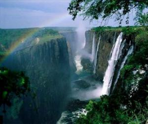

Zâmbia |
|
A Zâmbia, oficialmente conhecida como República da Zâmbia, é um país sem costa marítima da África austral. É limitada a norte pela República Democrática do Congo e pela Tanzânia, a leste pelo Malawi, a sul por Moçambique, peloZimbábue e pela Namíbia, e a oeste por Angola. Sua capital é Lusaka, localizada no sudeste do país. Em 24 de outubro de 1964, a Zâmbia tornou-se independente do Reino Unido e o primeiro-ministro Kenneth Kaunda se tornou seu primeiro presidente. O partido de Kaunda, Partido Unido para a Independência Nacional (UNIP), manteve o poder de 1964 até 1991. Entre 1972 e 1991, o país era um Estado de partido único, com o UNIP sendo reconhecido como o único partido político legal. Kenneth Kaunda foi sucedido por Frederick Chiluba, do Movimento para a Democracia Multipartidária, iniciando um período de crescimento econômico-social e descentralização do governo. Levy Mwanawasa, sucessor de Chiluba, presidiu a Zâmbia de 2002 até sua morte em agosto 2008, e é creditado por suas campanhas para reduzir a corrupção e aumentar o nível de vida. Após a morte de Mwanawasa,Rupiah Banda presidiu como presidente interino antes de ser eleito presidente em 2008. Rupiah Banda deixou o cargo depois de sua derrota nas eleições de 2011, pelo líder da Frente Patriótica, Michael Sata, que morreu em 28 de outubro de 2014, o segundo presidente da Zâmbia a falecer no cargo. Guy Scott serviu brevemente como presidente interino até que novas eleições foram realizadas em 20 de janeiro de 2015, onde Edgar Lungu foi eleito como o sexto presidente do país, desde sua independência.
 |